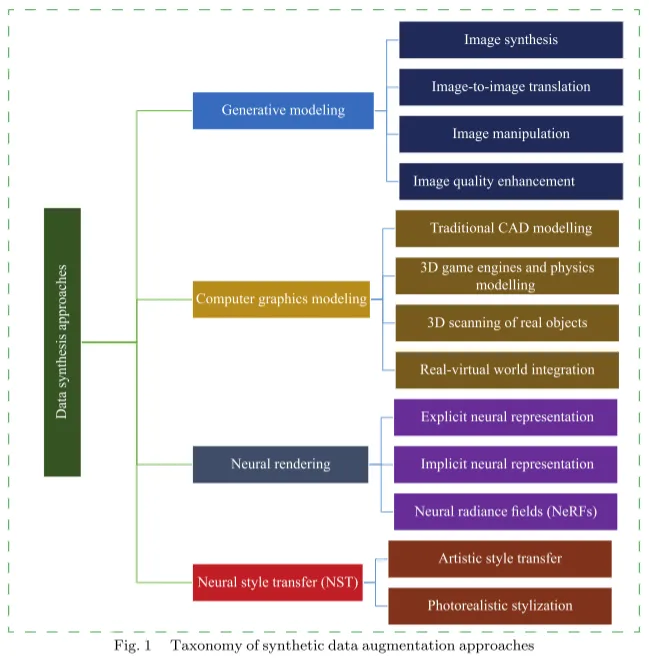
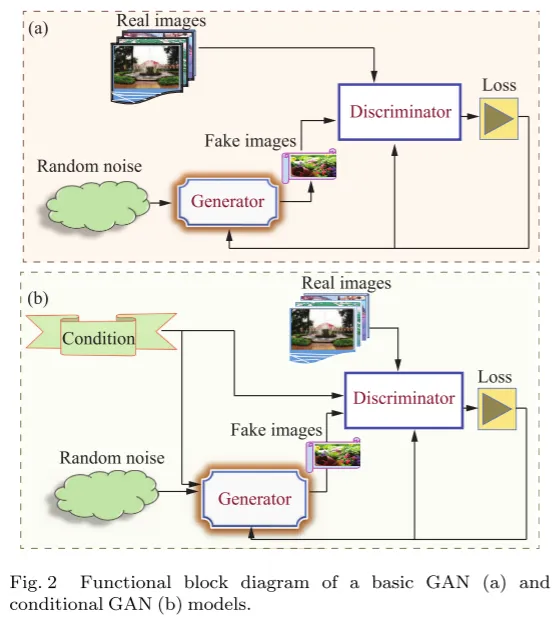
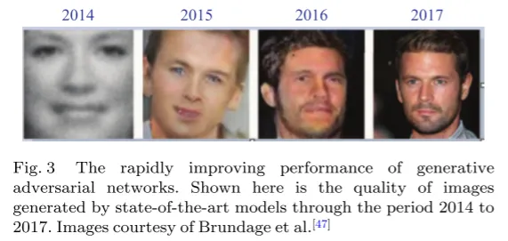
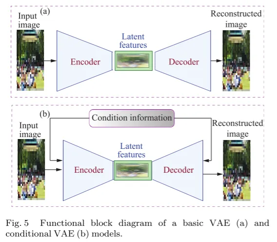
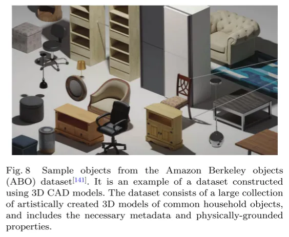

资源
正文
机器视觉中的综合数据增强方法综述
**Abstract: **解决计算机视觉问题的标准方法是使用代表目标任务的大规模图像数据集来训练深度卷积神经网络 (CNN) 模型。然而，在许多情况下，为目标任务获取足够的图像数据通常是具有挑战性的。数据增强是缓解这一挑战的一种方式。一种常见的做法是以所需的方式显式地变换现有图像，以创建实现良好的泛化性能所需的训练数据的所需的量和可变性。在目标领域的数据不可访问的情况下，一种可行的解决办法是从头开始合成训练数据，即合成数据增强。本文对合成数据增强技术进行了广泛的综述。它涵盖了基于逼真的 3D 图形建模、神经样式转换 (NST)、差分神经渲染以及使用生成对抗网络 (GAN) 和变分自动编码器 (VAE) 的生成建模的数据合成方法。对于这些方法的每一类，我们将重点介绍重要的数据生成和增强技术、一般应用范围和特定用例，以及现有的限制和可能的解决方法。此外，我们还提供了用于训练计算机视觉模型的常见合成数据集的摘要，重点介绍了主要功能、应用领域和支持的任务。最后，我们讨论了合成数据增强方法的有效性。由于这是第一篇非常详细地探索合成数据增强方法的论文，我们希望为读者提供必要的背景信息和对现有方法及其相关问题的深入了解。
关键词：数据增强，生成建模，神经渲染，数据合成，合成数据，神经风格转移（NST）。
1 Introduction
1.1 Background
目前，深度学习是解决许多复杂机器视觉问题的最重要技术。最先进的深度学习模型通常包含大量需要学习的参数，以表征各种视觉现象。此外，由于现实世界对象和场景的巨大外观变化，在训练过程中通常需要引入可用数据的各种变化。因此，训练深度学习模型需要大量带注释的数据来保证良好的泛化性能并避免过拟合。然而，数据收集和注释往往是耗时且昂贵的工作。与其试图收集大量带注释的数据，人工创建新样本通常更实用。数据增强是创建新数据以人为扩展训练集的过程。通常，增强过程涉及对原始数据执行转换，以特定方式对其进行更改。转换操作通常会改变数据的视觉特征，但会保留其标签。因此，**数据增强（DA）可以被视为一种模拟现实世界行为的手段，例如不同视角下物体和场景的视觉外观、姿态变化、物体变形、镜头失真和其他相机伪影。**在实践中，有几种情况下，机器学习（ML）模型的训练可能需要数据增强。最常见的场景包括以下内容：
-
训练深度学习模型，但训练数据量很小;
-
存在足够的训练数据，但感知质量很差（例如，低分辨率、朦胧或模糊）;
-
可用的训练数据不代表目标数据（例如，没有足够的外观变化）;
-
各类别的比例是偏斜的（不平衡数据）;
-
数据仅适用于一种情况（例如，明亮的日子）但是需要训练模型以在不同的条件集合下执行推断（例如，没有实际的方法来访问用于训练的数据（例如，成本过高或限制）。
前四个问题可以通过操纵现有数据来产生额外的数据来充分解决，这些数据可以增强训练模型的整体性能。然而，在后两个问题的情况下，唯一可行的解决方案是创建新的训练数据。
1.2 Significance of synthetic data augmentation
如前所述，最常见的数据扩充方法是以各种方式转换训练数据。然而，在没有训练数据自然存在的应用场景中，或者在它们的收集成本太高的应用场景中，使用上述方法来创建额外的训练数据通常变得不切实际。此外，许多计算机视觉任务通常是用例敏感的，需要特定于任务的数据格式和注释方案。这使得广泛注释的、公开可用的大规模数据集难以满足这些任务的特定要求.在这些情况下，唯一可行的方法是从头开始生成训练数据。**现代图像合成方法可以在合成数据中模拟不同种类的特定于任务的、真实世界的可变性。它们在诸如自动驾驶和导航[1，2]、姿态估计[3，4]、示能学习[5，6]、物体抓取[7，8]和操纵[9，10]的应用中特别有用，在这些应用中，获得基于相机的图像是耗时和昂贵的。此外，在一些应用中，位图像素图像可能根本不适合。**数据合成方法可以很容易地支持非标准图像模态，例如点云和体素。基于 3D 建模的方法还提供了更可扩展的分辨率以及灵活的内容和标签方案，以适应特定的使用情况。
1.3 Motivation for this survey
在许多机器学习领域数据严重短缺的情况下，基于数据合成的数据增强方法变得越来越重要。此外，使用传统的基于数据转换的增强技术，越来越难以满足自动驾驶、机器人和虚拟现实等新兴机器视觉应用的要求。因此，数据合成已成为为机器学习应用提供高质量训练数据的重要手段。然而，不幸的是，尽管存在许多关于数据增强方法的调查，但很少有研究涉及合成数据增强方法。这项工作的动机是科学文献中缺乏对这类重要技术的充分讨论。因此，我们的目标是深入探讨合成数据增强方法，以丰富当前关于数据增强的文献。我们详细讨论了数据合成的各种问题，包括各种方法的主要原理、用例和局限性的简明信息。
1.4 Outline of work
在这项工作中，我们首先在第 2 节中提供了数据增强的广泛概述，并在第 3 节中提供了合成数据增强方法的简明分类。此外，在第 4-7 节中，我们将详细探讨用于合成机器视觉任务数据的各种技术。在这里，我们讨论了每个主要方法类别的重要原则，方法，用例和限制。在这项工作中调查的方法是生成建模，计算机图形建模，神经渲染和神经风格转移（NST）。我们将在第 4-7 节中详细讨论这些方法。我们还比较了这几类数据综合方法的优缺点。我们在第 8 节中总结了常见合成数据集的主要特征。在第 9 节中，我们讨论了机器视觉领域中合成数据增强的有效性。我们在第 10 节中总结了主要问题，并在第 11 节中概述了未来研究的前景。最后，结论见第 12 节。
2 Overview of data augmentation methods
几何数据增强方法，如仿射变换[11]，投影变换[12]和非线性变形[13]，旨在创建原始图像的各种变换，以编码由例如对象大小，方向或视角变化引起的空间变化的不变性。常见的几何变换包括旋转、剪切、缩放、非线性变形、裁剪和翻转。另一方面，光度技术（例如，颜色抖动[14]、照明扰动[15，16]和图像去噪[17]）操纵定性属性（例如，图像对比度、亮度、颜色、色调、饱和度和噪声水平），从而使所得到的深度学习模型对这些属性的变化保持不变。一般来说，为了确保在不同场景中具有良好的泛化性能，通常需要同时应用其中的许多过程。
最近，更先进的数据增强方法已经变得普遍。最重要的一类技术[18−21]是基于离散地变换不同的图像区域，而不是均匀地操纵整个输入空间。这种增强方法已被证明在模拟复杂的视觉效果方面是有效的，如非均匀噪声、非均匀照明、部分遮挡和平面外旋转。数据增强的第二个主要方向利用特征空间变换作为在训练数据中引入可变性的一种手段。这些正则化方法操纵深度卷积神经网络（CNN）层内的学习特征表示，以变换底层图像的视觉外观。特征级变换方法的示例包括特征混合[18,22]、特征插值[23]、特征丢弃[24]和有用特征的选择性增强[25]。这些方法通常不会导致语义上有意义的更改。尽管如此，它们已被证明在提高深度学习模型的性能方面非常有用。第三个方向与增强过程的自动化有关。为了实现这一点，通常应用基于传统图像处理技术的不同变换操作来手动生成各种原始增强。然后使用优化算法自动找到最佳模型超参数，以及给定任务的增强类型及其幅度。
上述方法仅在训练数据存在时才可实现，并且增强的目标是转换可用数据以获得期望的特征。这项工作的重点是寻求生成新的训练数据的方法，即使在目标任务的数据是不可访问的情况下。
几项调查工作（例如，[26[30]）详细探讨了数据增强。Shorten 和 Khoshgoftaar[27]特别对重要的数据增强方法进行了广泛的讨论。然而，与大多数以前的调查类似，它们对数据合成方法的覆盖范围相当有限。
与这些调查不同，我们主要关注合成数据增强方法。我们认为，这样一个狭窄的范围将使我们能够更详细地处理重要问题，同时保持相对简洁的篇幅。
3 Taxonomy of synthetic data augmentation methods
在实践中，通常使用四种主要的合成数据生成技术：
- 生成建模;
- 计算机图形建模;
- 神经渲染;
- 神经风格转移。
生成式建模方法依赖于学习输入数据的固有统计分布来（自动）生成新数据。第二类方法，计算机图形建模，是基于手工构建的对象和场景的三维模型与计算机图形工具的帮助下，精心制作的过程。神经渲染方法基于使用传统前馈神经网络架构构造新数据的特殊方法。它们允许深度神经网络通过学习中间 3D 表示来生成全新的图像。在需要时，生成的 3D 数据可用于训练。第四类方法被称为神经风格转移。这些方法将从不同图像中提取的不同语义级别的特征联合收割机来创建一组新的图像。合成数据增强方法的详细分类如图 1 所示。

4 Generative modelling
生成建模方法是一类深度学习技术，其利用特殊的深度神经网络架构来学习底层类别的整体表示，以生成用于训练深度学习模型的有用合成数据。通常，它们通过使用噪声或目标数据的示例作为输入来学习目标数据的可能统计分布来工作。因此，这种关于训练数据分布的知识可以使他们能够生成复杂的表示。生成模型的例子包括玻尔兹曼机（BM）[31]，限制玻尔兹曼机（RBM）[32]，生成对抗网络（GAN）[33]，变分自编码器（VAE）[34]，自回归模型[35]和深度信念网络（DBN）[36]。目前，GAN 和 VAE 及其各种变体，如[37 - 39]是生成建模最流行的神经网络架构。
4.1 Common generative network models used for data augmentation
Generative adversarial network (GAN)
GAN 的总体结构如图 2（a）所示。对于图像生成，GAN 的基本工作原理如下。生成器从随机分布中采样多维噪声，并将其转换为类似于真实图像的表示。然后，鉴别器试图区分真实图像和人工生成的样本，并向生成器提供有关其预测的反馈。生成器旨在产生与真实样本无法区分的样本，根据损失函数计算的反馈误差迭代地改进其预测。以类似的方式，鉴别器使用自己的损失来改进后续的预测。这个过程最终导致模型生成高质量的图像。vanilla GAN 使用全连接多层深度神经网络架构来实现生成器和鉴别器子模型。

在条件 GAN（cGAN）[40]中，生成过程取决于生成器和控制器的控制输入（图 2（B））。这提供了额外的信息，帮助网络在目标类中再现所需的特征。从[33，40]中的一个简单的全连接架构，引入了许多新的架构创新，以提高 GAN 在图像域中建模数据的能力。其中值得注意的包括深度卷积 GAN（DCGAN），它采用卷积层作为生成器，采用转置卷积层作为卷积层，而不是完全连接的层；拉普拉斯金字塔 GAN（LAPGAN）[41]，它在多尺度金字塔结构中使用多个生成器-卷积层对;和超分辨率 GAN（SRGAN）[43]，它利用深度 CNN 和对抗网络来显着提高分辨率训练图像。其他创新的 GAN 模型包括信息最大化生成对抗网络（InfoGAN）[42]，像素到像素 GAN（Pix 2 Pix）[40]，DiscoGAN[44]，CycleGAN[45] 和自我注意 GAN（SAGAN）[46]。InfoGAN 采用非传统的表示多维噪声来帮助学习控制图像外观的复杂因素。Pix2pix 使用基于 cGAN 的配对图像转换方法来合成新图像。
DiscoGAN[44] 和 CycleGAN[45] 都利用一对生成器和鉴别器来执行无监督的图像到图像转换。SAGAN 将注意力机制整合到 GAN 结构中，以模拟更多的全局视觉特征和长期依赖关系。这些和许多其他改进使 GAN 能够合成具有自然纹理和光照的高度详细、逼真的图像，用于训练深度模型。图 3 直观地展示了 GAN 多年来的发展历程。在图 4 中，我们展示了几种最先进的 GAN 模型的多视图 3D 图像合成能力：GRAF[49]、GIRAFFE[50]、pi GAN[51] 和 MVCGAN[52]。

一些 GAN 模型[53 - 56]将自动编码器纳入其结构中，以学习潜在空间，其中不同的图像属性（例如，对象纹理、姿势或面部表情）可以被容易地操纵。自动编码器基本上由编码器和解码器子模型组成。编码器将输入数据转换为潜在空间中的随机低维表示。解码器通过将低维数据映射到高维输出空间来重构原始数据。总体目标是保证重建数据尽可能与原始数据相似。在其结构中采用自动编码器的模型能够学习数据和潜在变量的联合分布。学习这个联合空间简化了在输出空间中创建期望的视觉特征的过程，因为这可以通过操纵潜变量间接地实现。
Variational autoencoders
VAE（图 5（a））首先由 Kingma 和 Welling[34] 提出。从那时起，VAE 也被广泛用于生成用于训练深度学习模型的数据。与 GAN 类似，VAE 学习输入数据的概率分布，以帮助生成具有相似特征的新数据。VAE 首先使用编码器子模型将每个输入点映射到潜在空间中的正态分布。然后，解码器从该正态分布中采样以生成新的样本，从而确保真实的和生成的数据的分布尽可能接近。条件变分自动编码器（cVAE）类似于条件 GAN，使用附加元数据来基于由条件输入定义的期望特性生成输出（图 5（B））。由于 VAE 本质上不容易受到 GAN 所遭受的模式崩溃问题的影响，并且与 VAE 相比，GAN 生成感知上更好的图像，因此许多最近的工作（例如，[37− 39，57]提出了更复杂的生成建模框架，利用了两种模型的优势。

4.2 Approaches to image data augmentation with generative models
在数据增强的背景下，生成模型可以以几种不同的方式应用。这些包括生成新图像，将特定图像特征从源图像转移到目标图像，以及增强训练数据的感知质量或多样性。
基于这些不同原理的数据增强方法已用于各种计算机视觉任务，包括医学图像分类[58，59]，对象检测[60]，姿态估计[61]和视觉跟踪[62]。基于生成式建模技术解决数据扩充问题的常用方法见第 4.2.1-4.2.4 节。表 1 总结了这些方法的关键方面和应用场景。
4.2.1 Image synthesis
基于这些不同原理的数据增强方法已用于各种计算机视觉任务，包括医学图像分类[58，59]，对象检测[60]，姿态估计[61]和视觉跟踪[62]。基于生成式建模技术解决数据扩充问题的常用方法见第 4.2.1-4.2.4 节。表 1 总结了这些方法的关键方面和应用场景。4.2.1 图像合成在很难或不可能获得足够标记数据的应用环境中，生成建模的主要目标是生成合成数据[67−71]，以替代或结合真实的数据使用。这种情况下使用的模型旨在合成特定类别的图像数据以帮助训练。生成式建模的主要目标是生成覆盖基本类别分布的样本。这种类型的数据可以用传统的基于 CNN 的 GAN 架构来实现，而不需要像条件 GAN 或条件 VAE 那样利用条件信息。例如，Kaplan et al.[72] 证明了 GAN 和 VAE 在不使用条件信息的情况下生成逼真的视网膜图像的能力。Bowles 等人[68]采用渐进增长 GAN（PGGAN）模型来合成用于计算机断层摄影（CT）和磁共振（MR）图像分割任务的图像。作者表明，使用 GANs 生成合成图像可以提高两个不同任务的分割性能，无论原始数据大小和添加的合成样本比例如何。为了提高所生成图像的感知质量，可以使用若干 GAN，每个 GAN 被调谐用于创建特定类别（例如，在[67]中）。苏利等人[70]提出了一种生成对抗网络，使用未标记的 GAN 合成图像数据以半监督方式生成大量标记图像，以帮助语义分割任务。
4.2.2 Image-to-image translation
图像到图像转换[40]是一种用于通过将图像内容转换为另一图像的视觉风格来转换图像的技术。在其基本形式中，该方法涉及学习从源域到目标域的映射。这些方法依赖于使用 cGAN 和 cVAE 等模型的条件生成原理。基于图像到图像转换的生成建模方法可以用于将图像从一个颜色空间转换到另一个颜色空间。特别是，在红外，灰度和 RGB 彩色图像之间转换的方法是常见的[73，74]。这些技术还可以实现不同的视觉效果和特定特征，例如对比度、纹理、照明和其他复杂的光度变换，否则这些对于传统的增强方法来说是具有挑战性的。该方法作为一种数据增强方法，在计算机视觉中有着广泛的应用。在医学成像应用中，例如，基于图像到图像转换的方法可以用于将图像从一种模态传输到另一种模态（例如，从 CT 到磁共振成像（MRI）或 X 射线图像格式）。图 6 显示了使用 StyleGAN 模型的不同翻译[45]。
4.2.3 Image manipulation
数据增强的另一种常见的生成建模方法是通过执行特定的光度测量（例如，[88 89]）和几何形状（例如，[65，90−92]）图像处理。光度图像操作，如二值化[88]，彩色化（即，从灰度图像转换为彩色图像）[93]和去雾化[89]是可以通过生成式建模完成的常见任务。
4.2.4 Image quality enhancement
在一些计算机视觉任务中，可用于训练深度学习模型的图像通常质量较低。提高性能的一种方法是提高训练数据的质量。例如，生成建模通常用于清理有噪声的图像（例如，在[66]中）。此外，通过使用超分辨率 GAN，如 Pix2Pix[40]、SRGAN[43]、ESRGAN[94] 或其衍生物，可以定性地改善低分辨率图像。在最近的一项工作中，Wang 等人[95]使用了一种改进的 Pix2Pix 模型作为超分辨率 GAN，以提高低分辨率显微图像的分辨率，用于训练深度神经网络。他们首先使用 CycleGAN 生成了额外的数据，然后使用超分辨率 GAN 来提高训练数据集的质量。在许多研究中，生成模型已被用于从噪声数据（例如[96,97]）、低分辨率图像（例如[98]）、损坏的标签（例如[97]）或在雨天等恶劣天气条件下拍摄的图像中生成大型、干净的图像[100]。图 7 显示了图像增强技术（如去噪）在改善感知输入数据方面的有效性。[101-103]中也报道了将几何变换应用于训练样本的生成建模方法。最近的一些方法旨在提高 CAD 生成模型的感知质量。例如，RenderGAN[103] 和 DA-GAN[104] 试图通过改进简单的合成生成的 3D 模型来提高性能，使其具有逼真的外观和理想的视觉特性。
4.3 Common limitations of generative modelling techniques and possible workarounds
生成式建模方法的一个主要问题是，它们需要非常大的训练数据才能获得良好的性能[105]。GAN 还容易受到过拟合的影响，在这种情况下，鉴别器记住了所有的训练输入，并且不再为发生器提供有用的反馈来提高性能。为了解决 GAN 性能的这些问题，许多工作[106 - 108]已经考虑了扩充生成模型所训练的数据。这些方法已被证明在缓解小数据和过拟合问题方面是有效的。然而，采用扩充策略可能导致生成器从扩充数据的分布中再现样本的情况，该样本可能不真实地表示目标任务。一致性正则化[109，110]是最近提出的一种方法，用于防止扩充数据被生成器严格地再现。改进 GAN 泛化的更先进的方法包括基于扰动卷积[111]和极值理论[112]的技术。例如，为了使 GANS 能够处理稀有样品，Bhatia 等人[113]提出了一种基于极值理论[112]的概率方法，该方法允许从给定分布中生成真实的以及分布外的或极端的训练样本。在此上下文中，极端样本是与数据集中存在的样本显著偏离的训练示例。该方法还提供了一种在生成的数据中设置偏差的程度以及这些偏差的发生概率或比例的方式。Liu 等人[114]证明了 GAN 在某些情况下可能无法生成任务所需的数据（作为针对完全不同的任务进行优化的结果），因为 GAN 可能针对不同的目标进行优化。具体地说，在[114]中，为目标检测任务设计的 GAN 被显示为优化生成图像的真实感。
与所有数据合成方法一样，目前不可能直接比较不同的合成数据集，甚至不可能在不进行详尽测试的情况下确定合成数据对特定任务的适用性。根本的问题是普遍缺乏质量指标，可以客观地评估数据对给定任务的适应性。虽然对数似然等技术提供了一种评估和评估 VAE 质量的方法，但目前很难将其扩展到客观地比较 GAN 模型的质量。存在一些变通方法，允许我们根据生成的样本与目标数据的相似性粗略估计其质量。这涉及到将生成数据的统计信息与目标数据的统计信息进行比较。最简单的度量涉及使用更传统的相似性度量，例如最近邻，对数似然[57]，最小平均差异（MMD）[115]和多尺度结构相似性指数度量（MS-SSIM）[116]。由于这些技术仅估计像素分布，因此度量上的高分并不严格地指示高图像质量。更先进的指标允许我们定量地估计数据多样性（即，合成数据近似目标数据分布的程度），质量（即，整体照相现实主义）和其它特性。这些指标中最重要的包括起始分数（IS）[117]和 Fréchet 起始距离（FID）[118]，以及它们的新变体，如空间 FID[119]，无偏 FID[120]，记忆信息 FID[121]和类感知 FID[122]。这些指标使我们不仅可以评估一般质量，还可以评估生成模型的偏差和公平性等重要方面。通过目视检查进行手动评估是确定使用生成建模技术合成的数据质量的另一种常见方法[123，124]。该方法依赖于开发人员的领域知识，对训练数据的适当性做出良好的判断。在某些情况下，这可能是成功的最佳保证。然而，这种方法是非常主观的，容易受到人类评估者的偏见。此外，由于人类专家的能力有限，该方法不能应用于涉及大规模数据集的设置。
生成式建模技术的一个常见问题与培训挑战有关。特别是，基于 GAN 的生成模型存在训练不稳定的问题。这个问题的主要原因之一是所谓的模式崩溃问题[125]。当生成器无法学习输入数据的多样性时，就会发生这种现象，因此只能生成一种特定类型的数据，这种数据始终优于随机数，但在多样性方面较差。这个问题的常见解决方案包括权重归一化[126]和其他正则化技术[127]以及架构创新[128]。训练生成模型的另一个严重问题是不收敛问题[129]。研究人员试图通过采用自适应学习率[130，131]，重新开始学习[132]和模型参数的进化优化[133]等技术来解决这个困难。这些方法在一定程度上缓解了问题，但不能完全消除它。
5 Computer graphics modelling
一项越来越有前景的工作[134−136]旨在解决数据稀缺问题，利用计算机图形工具来合成训练数据。计算机图形工具能够创建 2D 和 3D 对象以及整个复杂的场景。使用计算机辅助设计（CAD）技术合成数据的过程涉及复杂的过程，如建模、装配、纹理和生成的 3D 对象的动画。游戏引擎提供了更高级的建模功能，可用于创建跨越整个城市的大型交互式场景和虚拟环境。
5.1 Approaches to data synthesis based on computer graphics modelling
在本小节中，我们将讨论各种图形建模方法，这些方法通常用于生成合成图像以解决增强问题。
5.1.1 CAD modelling
第 4 节中讨论的方法通常通过使用各种变换来重建 2D 空间中原始数据的变化，将数据增强问题作为特定图像域到其自身的 2D 映射来解决。这些基于 2D 的转换方法缺乏语义 3D 基础，因此本质上非常肤浅，可能无法充分代表现实世界场景的实际变化。图形建模方法通过将数据扩充作为 3D 到 2D 映射（即，从 3D 物理世界到 2D 像素表示的映射）。计算机图形模型越来越多地使用的一个重要领域是 3D 感知领域。通过对图像形成的基本 3D 过程进行建模，基于仿真的方法比纯 2D 操作方法（用于 3D 视觉）产生质量更好的增强。特别是，3D 监控极大地帮助了姿势理解、手势和动作识别等任务的执行。基于 CAD 建模的技术还可以模拟非标准视觉数据，例如点云（例如，[137]），体素（例如，[138]），热图像（例如，[139]），或者这些模态中的两种或多种的组合（例如，云[140]）。最先进的计算机图形工具能够产生相当逼真的视觉数据，用于训练机器学习模型。三维游戏引擎在这方面特别有前途，因为它们可以模拟复杂的自然过程，并使用真实的物理模型在不同条件下生成近乎真实的环境。这种能力提供了在复杂的现实世界（自然）场景中训练机器学习模型的机会。使用 CAD 工具建模的 Amazon Berkeley 对象（ABO）数据集的简单 3D 对象示例如图 8 所示。图 9 显示了来自 Hypersim[142]数据集的真实室内场景，也是通过 CAD 工具生成的。

CAD 建模方法使用几何图元（如三角形和多边形）及其位置信息、相机属性和全局场景信息来表示基本场景信息。渲染器将此表示转换为完整的 3D 场景。渲染是使用这些基本几何图元和其他场景参数和纹理生成图像的过程。典型的渲染管道是一个多阶段的过程，它将原始几何实体和场景参数组合成更复杂的对象和场景（图 10）。该过程涉及在每个处理阶段顺序创建更高级的表示，将基本实体组装成更复杂的对象，直到创建整个场景。使用分析公式指定基本元素。渲染引擎将数学公式转换为相应的图形表示，并计算各种特征，如照明、颜色和阴影，以供显示。例如，在 OpenGL 渲染管道中，渲染任务由顶点着色和组装组成，这些过程定义对象的坐标位置及其属性，并将其组合成更高的几何形状，如多边形、几何着色和光栅化（即将几何信息转换为像素形式）以及片段着色（颜色和纹理信息处理）。已经开发了许多高级集成开发环境（IDE）来促进 3D 建模。它们提供了一个先进、直观的图形用户界面（GUI）和易于使用的工具集，用于渲染和编辑 3D 模型。常见的 3D 建模工具包括模拟和 3D 动画软件工具，如 Cinema 4D、Blender、Maya 和 3DMax。这些工具提供了一种在可用数据不符合目标任务要求的情况下获取特定任务数据的方法。例如，服部等人[143]采用 3DMax 来合成视频监控应用中人类检测任务的数据，在这些应用中，特定任务的数据可能不容易获得。该方法允许根据场景（例如，场景几何形状和对象行为）和监控系统（即，摄像机参数）的特定要求定制生成的数据。这些工具还提供了一种为通用应用程序创建大规模数据集的方法。从 3D CAD 模型中获得的大规模合成数据集的示例包括 ShapeNet[144]、ModelNet[145]和 SOMASet[146]数据集。第 8 节描述了使用 3D 建模工具创建的一些最重要的数据集。
5.1.2 Synthetic data from 3D physics (game) engines
虽然 CAD 工具主要用于创建 3D 资产，但游戏引擎提供了在虚拟环境中以细微差别的方式操纵所生成的 3D 对象和场景的工具。它们通常附带内置的渲染引擎，**如 Corona 渲染器、V 射线和 mental ray。Unity3D、虚幻引擎和 Cry Engine 等高级游戏引擎可以模拟真实世界的现象，如真实的天气状况、流体和粒子行为、包括漫射照明、阴影和反射在内的效果，以及由主要现象导致的对象外观变化。通过随机化与这些现象相关联的参数，可以实现足够的数据分集。**除了视觉感知之外，基于 3D 游戏引擎的模拟环境还可以服务于广泛的应用。它们特别适用于规划、自主导航、同步定位和地图绘制（SLAM）以及控制任务等领域中的训练模型。图 11 显示了 CARLA[1] 中的示例场景，该工具是从虚幻引擎创建的。图 12 显示了可从 CARLA 获得的不同感知模态。
由于现代游戏引擎的先进操作能力，最近的合成数据生成方法[148]倾向于使用 3D 游戏引擎，这些引擎不仅能够生成完整的虚拟世界，用于训练神经网络模型，还能够使用深度强化学习框架对世界元素进行交互式训练。例如，在 Unity 3D 游戏引擎中引入的 ML 代理，提供了一个框架，用于使用各种机器学习技术（包括模仿学习，进化算法和强化学习）在 2D 和 3D 世界中训练智能代理。
Varol 等人[3]使用虚幻引擎合成真实数据集。他们的合成数据集，用于真实的任务的合成人类（SURREAL）已作为开源数据集提供，用于在不同的计算机视觉任务上训练深度学习模型。Varol 等人[3]显示，对于深度估计和语义分割任务，使用 3D 游戏引擎生成的合成数据训练的深度学习模型可以很好地推广到真实的数据集。Jaipuria 等人[149]使用虚幻引擎来增强自动车辆导航场景中用于车道检测和单目深度估计的人工数据的外观。除了使用真实感的真实世界物体生成场景外，他们还模拟了生成数据的各种变化：视点，云层，阴影效果，地面标记缺陷和其他不规则性。这种多样性已被证明可以在更广泛的实际条件下提高性能。Bongini 等人[139]使用 U3D 的热着色器渲染合成热物体，并将它们叠加在使用真实的热图像传感器捕获的场景中。他们还使用 GAN 模型来优化渲染图像的视觉外观，使它们看起来更像自然的热图像。
已经开发了其他插件，以方便从基于 3D 引擎开发的游戏引擎[150]或虚拟环境[150151]生成图像数据和相应标签。例如，Borkman 等人[150]引入了一种称为统一感知的统一引擎扩展，可用于为不同的计算机视觉任务生成人工数据和相应的注释，包括姿势估计、语义分割、对象检测和图像分类。该扩展旨在为 2D 和 3D 任务合成数据。Hart 等人[152]在机器人操作系统（ROS）环境中实现了自定义 OpenCV 工具，以从 Gazebo 平台中的模拟场景中提取帧并生成相应的标签。同样，Jang 等人[151]介绍了 CarFree，这是一种开源工具，可以自动从 Carla 生成合成数据。该实用程序能够为对象检测任务生成 2D 和 3D 边界框。它还能够进行适用于场景分割应用的像素级注释。CARLA[1]为研究人员和开发人员提供了一个基于 Python 的 API，用于与场景元素交互和控制。Mueller 和 Jutzi[153]利用 Gazebo 模拟器[154]合成用于姿势回归任务的训练图像。Kerim 等人[155]介绍了 Silver 框架，这是一个统一游戏引擎扩展，提供了一种高度灵活的方法来生成复杂的虚拟环境。它利用内置的高清晰度渲染管道（HDRP）来控制相机参数、随机化场景元素以及控制天气和时间效果。
5.1.3 Obtaining data directly from video games
最近的一些工作，例如[156−158]，专注于直接从视频商业游戏场景中提取合成视频帧作为图像数据，用于训练计算机视觉模型。为了实现这一点，适当的算法被用来提取和标记随机帧的视频序列通过采样 RGB 图像在一个给定的频率在玩游戏。由于现代视频游戏已经具有照片级真实感，因此以这种方式获得的图像数据的定性特征足以用于许多计算机视觉任务。Shafaei 等人[156]表明，对于语义分割任务，在通过游戏直接获得的合成图像数据上训练的模型可以达到与在真实的图像上训练的模型相当的泛化精度。通过域自适应技术的进一步改进来弥合真实的和合成图像之间的固有语义差距，从而比在真实的图像数据集上训练的模型具有更好的性能。
由于获取视频对象检测和跟踪任务的相关数据通常比其他计算机视觉应用更具挑战性，因此从视频游戏中生成数据已成为缓解这一挑战的有前景的解决方法（例如，在[158−161]中）。这种方法的主要优点是可以使用现成的视频游戏，而无需对捕获图像的分辨率有严格要求。其主要缺点是视频游戏包含的一般环境不是为特定的计算机视觉应用量身定制的。此外，来自游戏场景的图像的视觉特性可能没有针对计算机视觉任务进行优化。此外，数据生成过程通常缺乏灵活性，因为用户对场景外观的控制很少，无法根据需要改变场景行为；由于视频序列中的场景是固定的，用户无法在场景中引入可变性因素（例如，任意背景、对象和外观效果）。相比之下，诸如[155160162163]使用 3D 物理引擎从头开始合成场景的方法绕过了这些限制，需要非常长的时间并且是劳动密集型的。
5.1.4 Obtaining synthetic 3D data by scanning real objects
5.1.4 通过扫描真实的对象获得合成 3D 数据
另一种减轻使用图形建模方法从头开始合成密集 3D 数据所需的繁重工作的技术[136]是利用诸如 Microsoft Kinect 的特殊工具来捕获目标对象的相关细节。这是通过以不同分辨率扫描相关对象的不同视图并从这些扫描构建网格模型来实现的。通过这种方法，可以获得所需的低层次几何表示，而无需显式地对目标对象进行建模。在最简单的情况下，可以利用深度相机来获取 3D 表示以捕获对象的多个视图。然后使用诸如奇异值分解（SVD）[164]、随机样本一致性（RANSAC）[165]和粒子滤波[164]的合适算法将这些多个图像联合收割机组合成复合 3D 模型。[165−167]中提出的方法利用 RGBD 相机作为 3D 扫描仪，从对象中提取相关的外观信息。
一种常见的做法是从 3D 扫描中构建基本的铰接 3D 模型，这些模型在 3D 建模环境中进一步操纵以创建可变性。该方法允许我们仅将相关对象合并到已经建模的 3D 场景中。使用物体的真实 3D 扫描也有助于实现相关物体的物理上合理的表示。此外，照明、反射和阴影等视觉效果无法通过传统的 2D 图像变换方法轻松操纵。因此，在需要训练深度学习模型使其对这些视觉现象保持不变的情况下，这些技术至关重要。例如，Chogovadze 等人[170]特别采用基于 Blender 的光探针来生成不同的照明模式，以训练对照明变化具有鲁棒性的深度学习模型。Vyas 等人[165]采用 RGBD 传感器获得 3D 点云，然后使用基于 RANSAC 的 3D 配准算法从点云数据构建几何表示。当使用合成数据集进行训练时，作者在姿态估计任务上获得了 91.2%的准确率，尽管应用了一些领域自适应。然而，必须指出的是，这种方法只能在可以访问目标域数据的情况下使用。
5.1.5 Combining synthetic with real data
5.1.5 合成数据与真实的数据相结合
**由于许多物理变量的复杂相互作用难以使用计算机图形方法捕获，一些研究人员建议同时使用合成数据和真实的数据。一些作品建议只使用合成数据作为定义有用的视觉属性来指导增强过程的手段。**例如，Sevastopoulos et al.[171]提出了一种方法，其中来自基于单位的模拟环境的合成数据被用作数据采集过程的第一阶段，以识别有用的视觉属性，这些属性可以在收集真实的数据之前被利用来最大化给定任务的性能。其想法是利用合成数据为进一步探索提供初步方向，以降低对真实的数据进行过度试错实验的成本。在第 6 节中，我们提出了数据增强方法，结合联合收割机真实的和合成数据的有效性的定量结果。
5.1.6 Integrating real and virtual worlds
5.1.6 整合真实的和虚拟世界
如前所述，3D 对象扫描方法的基本思想是通过提取真实对象的 3D 信息，然后利用图形处理流水线对扫描获得的骨架模型进行 3D 变换，从而将目标对象的信息作为独立数据获得。然而，在某些情况下（例如[172173]），通过扫描现实世界对象获得的对象的 3D 几何模型被合并到使用图形工具创建的更复杂、与任务相关的 3D 场景中。将扫描对象集成到这样的虚拟世界中提供了一种有效的方法来操纵和随机化不同的因素，以模拟复杂的现实世界行为，这对模型泛化和鲁棒性很有用。以这种方式获得的合成 3D 模型可用于在复杂的 3D 视觉识别任务（如对象操纵和抓取）上训练模型。它们也可以被渲染为 2D 像素图像以增强图像数据。在其他一些情况下（例如[174]），合成对象以增强现实的方式沉浸在现实世界中。这些真实世界是从相机图像或视频中获得的。**在[174]中，这种方法被证明优于基于纯真实或合成数据的技术。**表 2 总结了基于计算机图形建模的最重要的数据增强方法。
5.2 Challenges of computer graphics-based synthesis and workarounds
5.2 基于计算机图形的合成的挑战和解决方法
尽管现代 3D 建模工具具有先进的渲染能力，但使用图形建模工具来合成训练数据仍有许多限制：
- 合成具有高细节水平和自然视觉特性（包括真实感光照、颜色和纹理）的真实感数据是一个复杂且耗时的过程。这可能会将 3D 图形建模技术在数据增强应用中的应用范围限制为仅简单或适度复杂的设置。
- **目前，在许多情况下，没有客观的手段来评估人工生成的数据的质量。**虽然已经设计了一些方法来评估合成数据，但这些方法仅适用于参考图像可用于比较的情况。然而，在需要使用图形模型的许多设置中，目标图像的样本通常在模型开发和测试阶段不可用。
- 通常很难事先知道对性能有利的理想因素和视觉特征。此外，对人类观察者来说看起来像照片一样真实的合成数据实际上可能不适合深度学习模型。例如，虽然高保真合成样品在某些情况下未能提供令人满意的性能，但一些研究人员（例如，在[157，175，176]中）使用低保真度合成图像获得了良好的性能。
- 生成过程通常通过仔细的建模过程来完成，而不是从任何自然过程或从真实世界变量获得的传感器数据。即使使用通过扫描真实的对象来生成合成数据的方法，用于配准的 3D 对准技术也将额外的缺陷引入到场景表示中。所有这些问题加剧了真实的和合成数据之间的域间隙问题。
由于上述局限性，生成与自然环境相当的语义上有意义的合成环境通常具有挑战性，尤其是在处理复杂场景时。由于 3D 建模工具获得的模拟数据往往不完美，因此增强过程不仅包括对视觉场景进行建模，还包括纠正各种缺陷和改进人工生成数据的外观，以缩小合成数据和真实数据之间的领域差距。事实上，已经提出了大量所谓的 sim-to-real（sim2real）技术[177-180]，用于微调和将合成生成的基于图形的数据传输到现实世界领域。使用生成建模技术（例如[103181182]）作为赋予简单 3D 模型逼真外观和理想视觉特性的手段，最近引起了人们的关注。这些方法通过利用未标记的图像数据和 GAN 为简单的计算机图形图像引入难以建模的现实世界视觉效果，为生成额外的训练数据提供了一种更实用、更便宜的方法。Sixt 等人[103]提出了学习增强参数，以使用大量未标记的真实世界图像样本来增强合成 3D 图像数据的真实感。双代理生成对抗网络（DAGAN）已被提出，以增强 3D 模型生成的合成、基本面部数据的真实感[104]。Atapour 和 Brecken[183]采用 CycleGAN 模型来优化合成数据的外观，从而提高了性能。Huang 和 Ramanan[184]没有使用 GAN 进行视觉风格转换来细化合成生成的数据，而是提出了生成大量合成行人数据，然后通过对抗训练选择最逼真的姿势。
合成数据中固有的丰富几何特征也被用于细化简单的 2D 图像。一类重要的细化方法依赖于图像到图像的转换模型，将新的外观和几何信息（例如，对象的新姿态、遮挡模式等）从这些视图流行的数据源传输到新的数据集。例如，Liu 等人[82]利用 GAN 模型，通过从存在丰富姿势变化的运动分析和重新识别集（MARS）数据集[185]传输姿势信息，增加了新数据集中人体姿势的多样性。相比之下，一些方法[186187]建议明确地分析执行必要的转换。Ma 等人[187]采用了一种深度神经网络架构，该架构结合了 GAN 和 U-Net 子模型，以生成基于人物图像和相应姿势的新训练样本。U-Net 模型通过明确利用指定的姿态信息，以所需的姿态再现参考图像的新图像。然后使用 GAN 模型来校正可能产生的任何伪影，并优化所需姿势中人的总体外观。同样，Chen 等人[186]采用显式扭曲操作来合成行人数据集的新形状和姿势。将真实视图转换为更基本的视觉数据的概念在人员或行人检测[184188]和跟踪[80,81]以及人员重新识别任务[82-84]中非常有用。
5.3 Augmentation for tasks that do not require realistic data
5.3 为不需要真实数据的任务提供增强功能
如前几段所述，许多最近的图像合成方法都专注于生成用于训练机器学习模型的真实数据。这一过程通常很繁琐，有时需要昂贵的第三方收费才能完成。然而，在一些情况下，深度感知[189]、光流[176]、自我运动估计[190]和双目（立体）视觉的视差学习[191，192]，图像的感知质量对于视觉理解并不重要。由于具有逼真几何形状和外观的 3D 数据建模问题通常具有挑战性，因此设计用于解决这些任务的模型可以轻松利用易于建模的非照片级 3D 数据，这些数据通过计算机图形工具合成。肖顿等人[189]在非真实感 3D 数据上训练机器学习模型，以生成用于人体姿势识别的深度图。该模型在单独使用感知质量差的合成数据进行训练时产生了良好的结果。Dosovitskiy 等人[176]在 Flying Chairs 数据集上训练了一个深度学习模型（FlowNet），这是一个不切实际的椅子 3D 模型的集合，用于光流。Ilg 等人[193]观察到，不太真实的飞椅数据集在光流估计方面比[191]产生更好的结果，[191]包含更逼真的 3D 训练数据。不太现实的 FlyingThings3D 数据集[191]也被证明在训练光流和场景流任务的深度学习模型方面是有效的[190，192]。
6 Neural rendering
另一种为视觉识别任务合成新训练数据的常见方法是神经渲染。神经渲染的目的是使用深度学习模型实现场景渲染过程。与传统的基于 3D 图形建模的场景渲染不同，神经渲染过程可以在前向和后向两个方向上完成。在前向方向上，从 3D 场景和附加场景参数生成 2D 图像。在后向方向上，像素图像被转换为真实的 3D 场景。图 13 中描绘了用于该过程的流水线。
6.1 Differential neural rendering
由于渲染过程本质上是不可微分的，因此将其纳入深度神经网络受到严重限制。微分渲染是一种克服这一挑战的方法，它将场景建模过程表述为微分问题，可以无缝地整合到深度神经网络管道中并进行端到端训练。为了实现这一点，已经提出了数值技术来寻找渲染操作的近似导数，这些导数可用于基于梯度的算法，如反向传播，以优化场景参数。一些早期的作品，如[195196]，嵌入了真实的 3D 图形组件作为正向渲染的渲染器，并通过使用近似分析函数对输出 2D 图像和输入场景参数之间的关系进行建模来实现反向渲染。渲染中的一项重要任务是光栅化，即将场景表示从连续光栅形式转换为离散像素值。由于光栅化过程本质上是不可微的，因此目前的许多方法都专注于开发能够以可微方式处理这一过程的近似方法。事实上，大量的微分神经渲染方法通常将微分限制在光栅化过程中。通常，该过程涉及估计光栅化过程的梯度，并在反向传播算法中使用它来优化渲染任务的参数。最近的工作[197-199]侧重于使用深度学习技术以端到端的方式学习正向渲染过程的许多阶段。在渲染过程中使用深度神经网络模型可以帮助生成更细微的场景属性（对象、环境、逼真的纹理和噪声），或者改进现有的场景元素，以提高在合成数据上训练的计算机视觉模型的性能。
6.2 Scene representation methods
神经渲染过程的一个重要部分是场景元素的表示：几何先验和场景参数。我们讨论了场景表示的常用方法。图 14 总结了这些方法的主要优点和缺点。
6.2.1 Explicit representation of scene primitives
6.2.1 场景图元的显式表示
传统的计算机图形学方法使用显式表示，利用分析功能来表征场景的各种视觉属性。一般来说，大多数神经绘制方法都使用网格表示来描述几何场景属性。除了这些方法之外，还开发了特殊技术来使用体素[200，201]，网格[195]和点云[202]数据处理其他图像模态。Baek 等人[203]我使用了在[195]中开发的 3D 网格渲染器，从 RGB 图像合成了 3D 手形和姿势。
虽然基于明确建模的几何先验的方法可以利用容易获得的 3D CAD 模型，但是它们通常受到底层模型中的不完善性的限制。为了满足特定任务的要求，通常需要进行额外的处理。因此，基于显式表示流水线的渲染方法可能受到场景捕捉过程和建模时间的不利影响。此外，这些方法通常需要在开发过程的某些阶段使用专有软件工具，使得获得精确的场景表示困难且昂贵，且因此限制了其应用范围。为了获得具有竞争力的性能，需要高度详细的几何图元和精确的场景参数，沿着复杂的渲染方法。因此，对这些元素进行建模的过程非常繁琐。由于这些挑战，一些工作建议深入学习组成场景基元，而不是从零开始明确地建模所有元素。
6.2.2 Implicit (neural) representation
6.2.2 内隐（神经）表征
与手动构建的真实的 3D 基元不同，它们的纯神经对应物是自动生成的，并且可以使用较少的人力来构建，尽管需要很长的训练时间表。然而，它们对 3D 场景结构建模的能力直接取决于底层神经网络的表示能力和容量。
为了提高使用场景先验表示设计的方法的有效性，一些作品[201204205]利用深度学习先验作为辅助元素来提高显式建模先验的准确性。例如，Liu 等人[201]提出，通过结合所谓的神经纹理来减轻纹理严格建模的负担，神经纹理是一组在学习场景捕捉过程中从深度神经网络的中间层获得的学习 2D 卷积特征图。然后将学习到的纹理叠加在用于渲染的几何先验（即 3D 网格）上。该方法允许没有详细纹理信息的过程和不完美的 3D 模型利用人工生成的纹理来生成高质量的图像。在[205]中，提出了一种基于点的神经增强方法，通过利用可学习的神经表示来丰富点云表示。同样，Liu 等人[201]提出了一种基于所谓的神经稀疏体素场（NSVF）的混合几何和外观表示方法。该方法将显式体素表示与学习到的体素约束隐式场相结合，对场景几何和外观进行编码。虽然上述研究[201204205]采用可学习元素来细化从头开始显式构建的场景图元，但最近的一些研究[197-199206207]提出了完全通过使用可学习元素学习场景模型（包括几何和外观）。这些表示通常是通过 2D 图像监控来学习的（如图 13 的反向渲染过程所示）。最近的隐式神经表示通常使用神经辐射场或 NeRF[198206208]，这种方法利用神经网络在有限的一组 2D 图像上学习 3D 函数，以基于光线追踪技术合成未观察到的视点和不同场景条件的高质量图像。
目前，使用仅基于学习表示的方法生成的场景的照相现实主义并不匹配使用显式和混合表示生成的场景。Duggal 等人[209]这表明，问题是由于缺乏强大的几何先验神经表示。然后，他们提出了一个编码器子模型来初始化潜在空间中的形状先验。为了保证合成的形状保持高层次的特点，他们的现实世界中的同行，高维形状先验实现的援助下的一个子模型。这用作形状优化过程的正则化器。最近，隐式神经渲染技术已被用于基于 VAE [210，211]和 GAN [50，51，212]的生成建模框架中，以实现 3D 感知视觉风格转移。这些改进了单独使用神经渲染或生成建模技术可实现的数据合成结果。对于神经渲染的场景，使用生成建模有助于根据需要轻松地适应视觉上下文。另一方面，虽然生成建模方法已被单独用于成功地建模 3D 场景，但它们往往缺乏足够用于复杂 3D 视觉推理任务的真正 3D 解释[213]。
6.3 Approaches and use-cases of neural rendering in data augmentation
出于数据增强的目的，通常应用神经渲染的情况有三种：
- 2D 到 2D 合成：使用 2D 监督合成额外像素（2D）数据的情况;
- 场景重建（2D 到 3D）：3D 视觉理解任务，其中 3D 数据集不可访问，并且需要使用可用的 2D 图像数据合成 3D 对象或场景;
- 3D 到 2D 合成：从 3D 资产生成 2D 图像的任务。
6.3.1 2D to 2D synthesis
图 13 中呈现的数据合成架构的直接应用是从给定的 2D 输入图像生成具有期望的视觉属性的新的 2D 图像数据。在这种情况下，神经渲染过程的任务是在最终渲染阶段之前在中间 3D 表示中应用适当的变换，以生成所需的 2D 输出。其基本思想是理清图像变化的相关因素，如姿态，纹理，颜色和形状。然后，在渲染过程中，在映射到 2D 空间之前，可以在中间 3D 空间中对这些进行操纵。这样的方法促进了对各种场景元素和视觉属性的语义上更有意义的操纵。在数据增强中，当合成场景中对象的不同姿态时[214]，当从单个图像样本生成新视图时（例如，在[215]中）或当将照明效果引入全局场景外观以编码这些变化的不变性时。这些变换通常难以用缺少 3D 处理阶段的 2D 操作精确地实现。
6.3.2 2D to 3D synthesis (scene reconstruction)
与数据增强相关的可微分渲染的另一个重要应用是场景重建，即从 2D 图像到 3D 场景的转换。场景重建技术通常依赖于逆图形原理。在这种情况下，使用 2D 图像来恢复底层 3D 场景。在重建过程中，还估计了场景几何、照明、相机参数等重要场景参数，以及位置、形状、纹理和材质等对象属性。这在需要 3D 视觉理解能力的应用程序中很有用。此类应用的示例包括高级认知机器视觉任务，如语义场景理解、灵巧控制和非结构化环境中的自主导航。Tancik 等人[199]最近提出了 BlockNeRF，这是一种能够合成大规模环境的技术（见图 15）。他们通过将场景表示划分为不同的块来解决基于 NeRF 的模型的当前局限性，这些块可以独立并行渲染并组合在一起，形成一个整体的连续虚拟环境，用于在导航任务上训练机器学习模型。这些外观修改也可以按块方式应用，其中与单个 NeRF 对应的较小区域单独更新。
场景重建方法也已被广泛用于改善诸如 MIR（例如，[216，217]）和 CT（例如，[218-222]）。例如，[218 - 220]中的作品提出使用隐式表示来增加稀疏 CT 图像的分辨率。Gupta 等人[221]在称为 NeuralCT 的图像重建模型中采用 NIR 来补偿 CT 图像中的运动伪影。他们的方法不需要明确的运动模型来处理捕获过程中患者运动引起的差异。
6.3.3 3D to 2D synthesis
从三维场景合成像素图像是场景重建的逆过程。它旨在学习 3D 场景，并在神经渲染技术的帮助下将其映射到 2D 空间。这个想法是利用传统图形工具或游戏引擎设计的 3D 模型来生成 2D 像素图像。这个过程非常简单：给定一组原始的 3D 几何先验和相应的场景参数，任务是获得一个 2D 像素图像。3D 到 2D 子任务可以在图 13 中的差分图中看到。与前面讨论的需要像素图像来合成训练数据的 2D 到 2D 合成方法不同，3D 到 2D 合成方法直接从 3D 资产生成 2D 图像。
差分渲染的一个常见应用是采用深度神经网络模型来生成 2D 图像，并在合成生成的 2D 图像数据中应用各种类似 3D 的变换时提供灵活性。例如，差分渲染器可以利用场景元素，诸如 3D 几何形状（例如，体积对象的顶点）、颜色、照明、材料、相机属性和运动来忠实地合成未观察到的像素图像。合成图像的可变性是通过操纵对场景结构（几何形状）和外观（光度）有贡献的各个因素来实现的。因此，该过程提供了一种控制场景中的特定对象（例如，修改对象比例、姿势或外观）以及一般场景属性。这可以帮助将更多的物理上合理的语义特征结合到合成中，而不是缺乏 3D 基础的传统图像合成方法。
6.4Limitations of neural rendering methods and possible workarounds
神经渲染方法使我们能够绕过手动构建真实的世界对象的计算机图形模型的繁琐而费力的过程。它们提供了一种自动化的方式来模拟复杂的物理过程和场景。最先进的差分神经绘制技术使得预测复杂场景像素图像的空间结构成为可能。它们可用于恢复特定 2D 图像的 3D 信息。基于 NeRF 模型的现代方法，如 PixelNeRF[208]，DS-NeRF[223]和 IBRNet[224]甚至可以在各种照明条件下生成不同的场景，并从几个或单个 RGB 图像中构成。然而，训练这样的模型需要大量的任务相关数据。这些方法对看不见的数据的推广效果很差。由于在许多实际环境中，这些任务的标记数据集可能非常具有挑战性，因此许多作品[204，205，225，226]将传统的图形管道整合到端到端深度神经网络中，以查看一致的场景。生成建模技术[49，213，227]也被认为是在缺乏地面实况图像的情况下提供必要监督的可行手段。Hao 等[227]例如，提出了一种神经渲染模型，允许从简单的 3D 乐高积木世界（如 Minecraft）生成逼真的场景。由于这些类型的输入没有可用于监督训练的地面实况图像，因此作者使用预训练的 GAN 生成的图像作为伪地面实况，而不是真实的图像。他们的方法类似于[199]，也允许用户使用外观代码灵活控制场景外观和语义内容。这种能力对于长期视觉跟踪等应用非常有用[228]，其中场景动态严重影响性能;控制场景外观的能力对于模拟所有可能的视图条件非常重要。GANcraft 的基本结构和示例输出如图 16 所示。图 17 显示了不同 GAN（MUNIT[230]，（SPADE[229]和 wc-vid 2 vid [231]），NeRF（NSVFW[232]）以及 GAN 和 NeRF 的组合（GANcraft[227]）生成的场景的视觉比较。
基于神经渲染方法的数据合成的一个重要方面是能够处理不同的数据表示，例如体素、原始点云、像素或基于对象物理属性的学习函数描述的隐式定义的数据形式。然而，这种灵活性也带来了困难：对同一数据的表示可能非常不同，不同形式的表示不一定相互兼容。最近的技术[233-236]允许在这些不同的数据表示之间进行融合或转换。然而，这些方法往往会导致场景元素的重要信息丢失。由于这些困难，训练神经渲染模型以生成这些模态的数据仍然是一个具有挑战性的问题。此外，存在相对较少的数据集，用于在许多可能的表示方式上训练微分神经渲染模型。鉴于人们对神经渲染方法的兴趣迅速增长，这个问题将在短期内得到解决。
隐式神经表示还可以支持非标准成像模式，例如合成孔径声纳（SAS）图像[237，238]，计算机断层扫描（CT）[218，222，239]和强度衍射断层扫描（IDT）[240]。此外，这些方法能够对音频信号等非视觉信息进行建模[241]。还提出了利用多种视觉模态与其他物理信号一起提供有关对象物理特性的补充信息的方法[218，239，240]。这可以支持机器人、虚拟、增强、扩展和混合现实以及人机交互等应用中的多感官智能。然而，添加这些额外的元素意味着数据需求将呈指数级增长，这使得仅基于学习的模型实现现实结果变得非常具有挑战性。许多著作（如：[241−243]）建议整合特定任务的先验知识，以提高神经渲染方法的能力，这些方法对复杂场景和交互进行建模，以更好地推广到看不见的上下文。消除强先验通常需要在神经网络模型中使用特殊的数学公式来编码 3D 世界中对象的空间特征和自然行为，从而导致计算复杂性和成本增加。由于这些原因，最先进的神经渲染框架（如[244，246，247]）本质上是复杂的，限制了它们表示大规模场景的能力。Block-NeRF[199]提出了一个模块化框架，允许单独的 NeRF 模块表示场景的各个区域（如图 15 所示）。这允许使用稀疏的 2D 图像来表示和有效地操纵大规模 3D 场景。
7 Neural style transfer
神经风格转移（NST）是一种合成新图像的方法，类似于基于 GAN 的风格转移。然而，与生成建模方法相比，神经风格转移利用传统的前馈卷积神经网络进行数据合成。
7.1 Principles of neural style transfer
神经风格转换首先涉及对原始图像的内容和结构以及参考样本风格的学习表示。然后将这些表示组合在一起，以参考图像的样式生成新的表示，同时保持原始图像的内容和结构。该方法利用深度卷积神经网络（DCNN）的分层表示机制，灵活生成具有各种外观伪影和风格的新图像。图 18 展示了该概念的基本原理。由于卷积神经网络中的较浅层编码对象纹理、线条和边缘等低级视觉特征[249]，而较深层学习高级语义属性，因此可以通过分别操纵这两个语义级别并以不同方式组合它们来实现不同的增强方案。在 NST 中，通常使用没有完全连接层的 DCNN 模型来提取不同级别的图像特征。然后提取由较浅层编码的低级特征，并将其与从第二幅图像中提取的高级特征相结合。由于第二幅图像贡献了高级特征，本质上，它的语义内容被转移到人工生成的图像中，而第一幅图像的视觉风格被转移（见图 18）。
Gatys 等人[251]首次提出了神经风格转换的原始技术，作为在图像中人工创建不同艺术风格的一种方式。具体来说，他们改变了数码相机拍摄的风景图像，使其看起来像艺术品制作的图像，同时仍保持其语义意义。为了实现这一点，Gatys 等人[251]删除了 VGG 模型的全连接层[252]，并使用卷积层来提取不同语义级别的视觉特征。然后，他们引入了一个优化函数，该函数由两个不同的损失组件（样式和内容损失函数）组成，这两个组件分别由不同的权重参数集控制。基于这些原理，作者表明，通过分离 CNN 模型浅层和深层的滤波器响应，图像内容和风格信息可以独立地传输到不同的视觉环境中。为了创建具有源图像 Ic 的内容和目标图像 Is 的样式的新图像，他们建议将 Ic 的后期处理阶段与 Is 的早期阶段结合起来（图 18）。神经风格转换也已扩展到视频[253-255]和 3D 计算机视觉[256]应用。Ruder 等人[256]提出了一种视频风格转换技术，该技术将单个图像的参考风格应用于视频序列中的整个帧集。在[257]中，神经风格转换方法与 GAN 模型相结合，从 2D 视图生成各种 3D 图像。然后，生成的图像数据用于提高 3D 识别任务的性能。
7.2 Neural style transfer as a data augmentation technique
在最初的工作[251]之后，许多后续研究（例如[257−265]）采用了神经风格转换技术作为数据增强策略的一种形式，以合成新的图像来扩展训练数据。在许多作品中，包括介绍该方法的原创作品，风格转换通常用于合成非真实感图像。可以合理地假设，以非照片真实感的方式将程式化图像添加到训练数据集中仍然有助于减少过拟合并提高泛化性能。事实上，许多工作表明，许多任务都是如此。Jackson 等人[266]证明，增强训练数据的非真实感图像（例如，以艺术风格合成的图像）可以显著提高几种不同计算机视觉任务的性能。Jackson 等人[266]使用神经风格转移，在跨域图像分类任务中，与基线模型（无增强的 InceptionV3）相比，提高了 11.8%至 41.4%，与颜色抖动（单独）相比，改善了 5.1%至 16.2%。此外，与七种不同的经典增强类型的组合相比，他们的方法的性能提高了至少 1.4%。[266]中的作者旨在通过随机化图像特征（纹理、颜色和对比度）来创建更适合多域分类任务的随机样式，而不是为每张图像传输单一样式。他们使用了所谓的风格嵌入。
7.3 Approaches to data augmentation using NST
在文献中，可以区分三种主要的基于神经风格转移的数据增强方法。这些是 1）旨在增加数据可变性以提高泛化性能的方法，2）旨在合成真实感图像数据的方法，以及 3）寻求仅选择性地修改最重要（在给定上下文中）图像部分的方法。我们在第 7.3.1-7.3.3 节中简要讨论了这三种神经风格转换的实现。在表 3 中，我们总结了这些方法。
7.3.1 Improving data diversity with artistic stylization
由于较高的数据多样性通常有利于更好的泛化精度，许多作品[271274−276]已经认识到增加风格图像多样性的重要性，并引入了不同的技术来实现这一点。Wang 等人[271]提出了一种通过随机噪声注入来扰动深度卷积特征的方法。另一类方法[260270277278]旨在通过开发允许同时传输许多不同风格的方法来解决这个问题。例如，在[270]中，中间 CNN 层中的卷积特征图集被分组到滤波器组中，每组对一种特定风格进行唯一编码（见图 19）。Dumoulin 等人[278]提出了一种简单的归一化方法，称为条件实例归一化，该方法利用卷积特征的均值方差统计，将多达 32 种不同的风格转移到指定的内容图像中。Georgievski[260]提出了一种方法，可以将不同的样式独立指定为输入样式嵌入，而不是从参考图像中明确提取样式信息。首先，首先从在大规模图像数据集（在本例中为 ImageNet）上训练的预训练神经网络（Inception-ResNet-V2）中获得大量通用样式嵌入。然后，学习到的样式被用来构建样式的多元正态分布，这些样式稍后可以应用于内容图像。样式的应用是通过编码器-解码器子网络实现的，作者称之为样式转换器。Huang 和 Belongie[279]通过修改实例规范化操作来扩展[278]的概念，使其能够对任意样式进行编码，而不是像[278]中那样传输一组预定义的样式。他们引入了一个新的层，自适应实例归一化（AdaIN），取代了[278]中的条件实例归一化层，其功能是对齐风格和内容图像的卷积特征的均值和方差。Gu 等人[277]提出重新排列风格图像的深层特征图，以合成具有任意风格的图像。基于这种样式化的数据增强方案将导致更稳健的表示，类似于渲染图像中的样式随机化。
除了这些旨在通过在 CNN 层中引入编码风格的新架构方法来改善图像合成的方法之外，许多作品[280，281]主要集中在开发新的损失函数，这些损失函数允许更好地传输更多样化和细粒度的特征，而不是基于风格和内容损失函数的早期方法[251]。Li 等人[274]引入了一个特殊的损失函数，称为多样性损失，以鼓励多样性。Luan 等人[282]提出了一种基于平滑估计的损失函数。
7.3.2 Photorealistic data synthesis with NST
最近，一些研究人员[282，283]已经引入了一些方法来增强使用 NST 方法合成的图像的真实感。照片级真实感样式是一种样式化方案，它使生成的图像在视觉上尽可能接近于由真实的图像传感器捕获的真实的图像。照相现实主义旨在模拟图像细节和纹理方面的高质量数据，同时考虑到一系列现实因素，其中可能包括相机运动，随机噪声，失真和变化的照明条件造成的模糊效果。在图 20 中，比较了旨在实现真实感风格化的各种模型的输出。
还有一系列 NST 方法旨在传输特定的视觉属性，如图像颜色[275，289，290]，照明设置[291]，材料属性[292]或纹理[293，294]。Rodriguez-Pardo 和 Garces[292]提出了一种基于 NST 的数据增强方案，该方案基于在不同的照明和几何图像失真条件下传输图像的属性。Gatys 等人[295]提出了将风格分解为不同的感知因素，如几何形状，颜色和照明，然后可以以不同的排列组合，以合成具有特定的，期望的属性的图像。为了避免几何失真并保留从样式图像中提取的卷积特征的统计特性，Yoo 等人。[283]引入了小波校正的传输机制，其用小波池化单元代替标准池化操作。